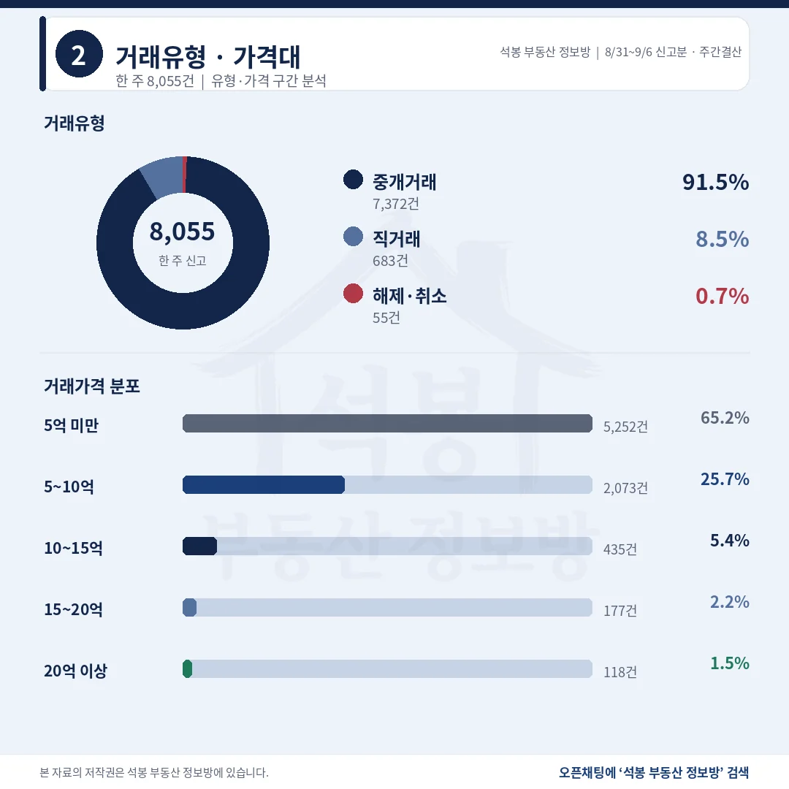
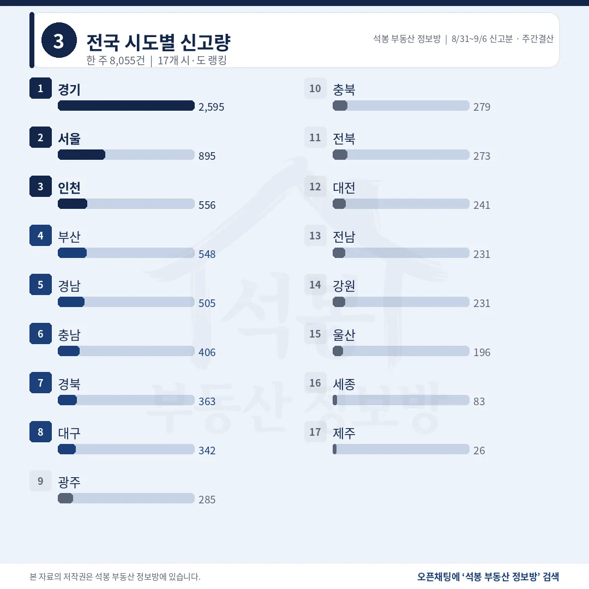
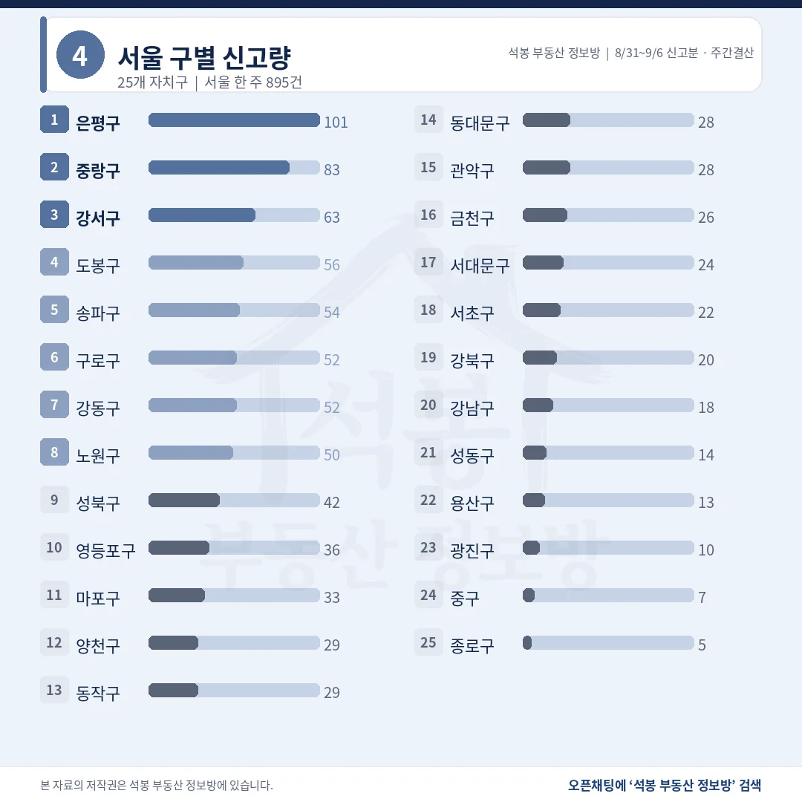
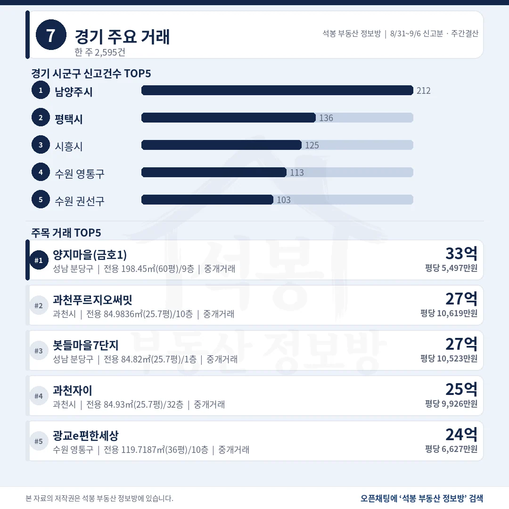
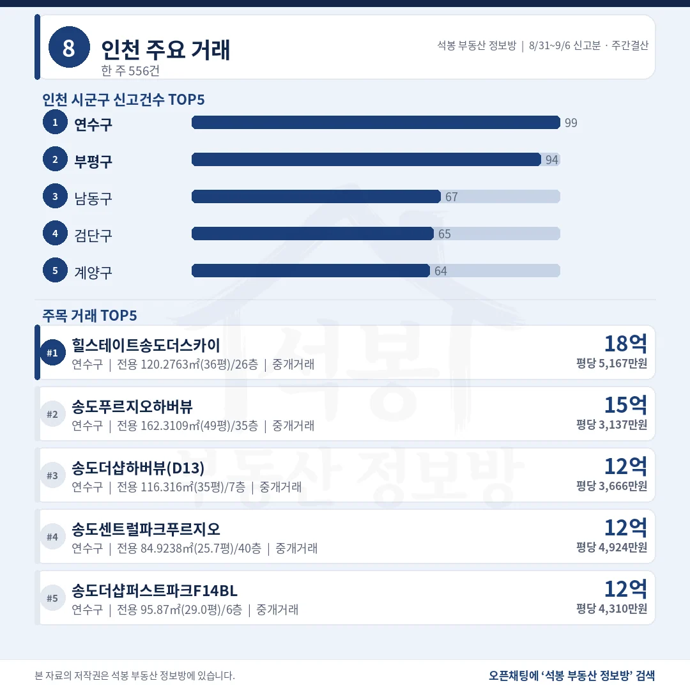
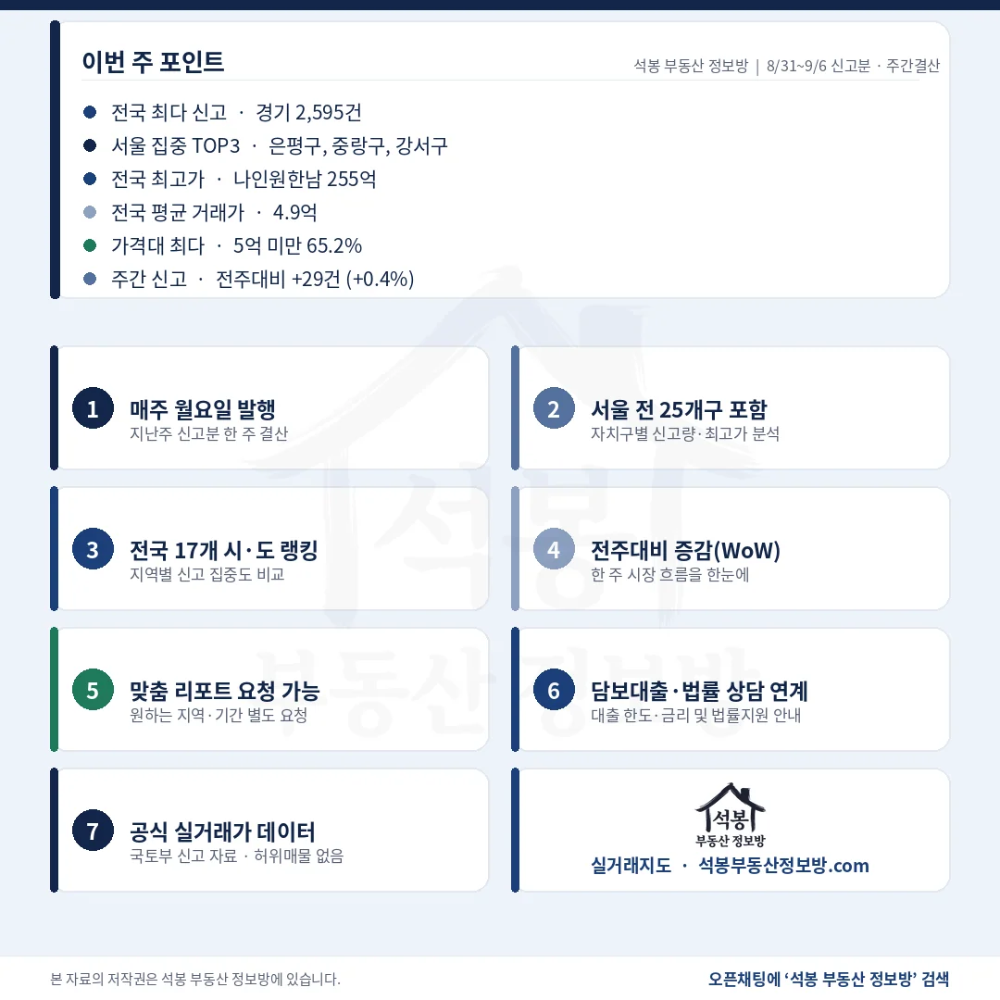

8월 31일부터 9월 6일까지 전국 아파트 실거래 신고는 8,055건, 전주보다 29건 늘었습니다. 그런데 서울 895건 가운데 110건이 두 단지를 공공기관이 하루에 사들인 물량입니다. 이 110건을 빼면 서울은 785건으로 전주보다 70건 줄고, 전국도 7,945건으로 81건 줄어듭니다. 8월 31일~9월 6일 결산은 이 110건을 떼어 놓고 보시면 됩니다.
단지명을 누르면 그 단지의 실거래 내역과 시세를 바로 볼 수 있습니다. (면적과 평당 단가는 모두 전용면적 기준)
중개 91.5%, 20억 위 118건은 1.5%

거래유형·가격대
직거래 683건 가운데 110건이 서울 두 단지 공공기관 매입이고, 이를 빼면 직거래는 7.1%입니다.
거래유형
건수
비중
중개거래
7,372건
91.5%
직거래
683건
8.5%
해제·취소
55건
0.7%
가격대
건수
비중
구간 최고 거래
5억 미만
5,252건
65.2%
안산 단원구 고잔롯데캐슬골드파크 4.995억
5~10억
2,073건
25.7%
도봉 창동현대4차 9.99억
10~15억
435건
5.4%
분당 까치마을(4단지) 14.99억
15~20억
177건
2.2%
성동 옥수삼성 19.95억
20억 이상
118건
1.5%
용산 한남동 나인원한남 255억
전국 중위 거래가는 3.72억, 평균은 4.88억입니다. 15~20억 구간이 129건에서 177건으로 늘어 증가폭이 가장 큽니다.
여기서부터는 회원에게 보여드립니다
카카오 로그인 3초면 전문을 읽을 수 있습니다. 무료입니다.
가입하시면 지역 시장조사 보고서(약식)를 2회 무료로 요청하실 수 있습니다.
이미 회원이면 같은 버튼으로 로그인만 됩니다
수도권 50.2%, 인천 556건이 11.6% 늘었습니다

전국 시도별 신고량
17개 시도 중 8곳이 늘고 9곳이 줄었는데, 늘어난 시도 가운데 서울은 공공기관 매입을 빼면 감소로 바뀝니다.
시도
신고
중위 거래가
전주비
비고
경기
2,595건
4.85억
-0.9%
최다 단지 12건 · 쏠림 없음
서울
895건
8.50억
+4.7%
공공기관 110건 제외 시 785건 · -8.2%
인천
556건
4.03억
+11.6%
쏠림 없음
부산
548건
3.75억
-2.8%
쏠림 없음
경남
505건
2.30억
-6.8%
쏠림 없음
충남
406건
1.95억
+8.6%
아산 신인동 아산엘크루 직거래 16건 하루
경북
363건
1.70억
+9.7%
포항 더트루엘포항 공공기관 8건
대구
342건
3.50억
+11.8%
쏠림 없음
강원 231건(-16.0%)과 전북 273건(-10.8%)이 가장 많이 줄었습니다. 수도권 비중 50.2%는 서울 공공기관 110건을 빼면 49.5%로 전주와 같습니다.
서울 895건 중 110건이 두 단지 공공기관 매입입니다

서울 구별 신고량
은평구 1위와 중랑구 2위가 둘 다 한 단지의 하루 일괄 신고로 만들어졌습니다.
자치구
신고
중위 거래가
최다 단지 · 비고
은평구
101건
6.50억
응암동 미가마하나임 60건(59.4%) 공공기관 9월 2일 하루 · 제외 시 41건 7.80억
중랑구
83건
3.03억
상봉동 상봉생활 50건(60.2%) 공공기관 8월 27일 하루 · 제외 시 33건 7.65억
강서구
63건
8.85억
공항동 더트루엘마곡HQ 5건
도봉구
56건
5.70억
방학동 신동아1 6건 · 다섯 날짜
송파구
54건
19.40억
잠실동 리센츠 4건
구로구
52건
6.55억
최다 단지 2건 · 쏠림 없음
강동구
52건
14.70억
길동 삼익파크맨션 5건
노원구
50건
6.60억
전주 147건에서 97건 감소
9월 1일 원고에서 짚어 드렸던 상봉생활 50건에 이어, 응암동 미가마하나임 60건이 9월 2일 하루에 더해졌습니다. 둘 다 2026년 준공 신축 전용 20~53㎡(6.1~15.9평)를 2.87억~6.69억에 사들인 물량이라, 두 자치구 중위값은 시세로 읽지 않는 편이 안전합니다.
6위는 잠원동 반포센트럴자이 46억, 7위는 잠실 주공5단지 45.75억입니다. 20억을 넘긴 118건은 서울 99건(83.9%), 경기 18건, 부산 1건입니다.
남양주 212건 1위, 인천 10억 위 13건 중 12건이 연수구

경기 주요 거래

인천 주요 거래
경기 20억 위 18건은 분당 8건, 광교 5건, 과천 4건, 안양 1건이고 인천에는 20억 거래가 없습니다.
지역
신고
중위 거래가
최다 단지 · 비고
경기 남양주시
212건
4.80억
다산자연앤e편한세상3차 7건 쏠림 없음
경기 평택시
136건
2.95억
합정동 평택뉴비전엘크루 5건
경기 시흥시
125건
4.22억
대야동 시흥센트럴푸르지오 8건
경기 수원 영통구
113건
5.55억
광교e편한세상 20억 위 4건
인천 연수구
99건
6.30억
송도동 65건 · 10억 위 12건
인천 부평구
94건
3.99억
청천동 e편한세상부평그랑힐스 5건
인천 남동구
67건
2.82억
만수동 주공8단지 4건
경기 최고가 분당 수내동 양지마을(금호1) 33억은 전용 198.45㎡(60평)라 평당 5,497만원입니다. 인천 최고가 힐스테이트송도더스카이 18.8억은 전용 120.28㎡(36평), 평당 5,167만원으로 경기 1위와 평당이 거의 같습니다.
양천구 20억 위 10건, 서초구와 같습니다

주간 포인트
구분
8/24~8/30 신고분
8/31~9/6 신고분
증감
전국 신고
8,026건
8,055건
+29건 (+0.4%)
서울 신고
855건
895건
+40건
서울 · 공공기관 매입 제외
855건
785건
-70건
서울 중위 · 제외 시
9.10억
8.50억 · 9.50억
-0.60억 · +0.40억
20억 이상
120건
118건
-2건
강남3구 신고 · 중위
102건 · 21.90억
94건 · 20.40억
-8건 · -1.50억
서울 신고는 40건 늘었는데, 공공기관이 사들인 110건을 빼면 785건으로 70건 줄었습니다. 서울 중위 거래가가 9.10억에서 8.50억으로 내려온 것도 같은 이유입니다. 그 110건이 전부 2.87억~6.69억 소형이라 중위값을 끌어내렸고, 빼고 다시 세면 9.50억으로 오히려 0.40억 올라갑니다. 8월 31일~9월 6일 서울 숫자는 이 110건을 걷어낸 뒤에 읽어야 방향이 보입니다.
고가 시장은 자리가 바뀌었습니다. 20억 위 서울 99건 가운데 송파구 24건은 전주와 같은데, 서초구가 21건에서 10건으로 줄고 양천구가 5건에서 10건으로 늘어 둘이 같아졌습니다. 양천구 10건은 전부 목동신시가지와 청구한신이고 최고는 목동신시가지2 37억입니다. 강남3구는 102건에서 94건, 중위는 21.90억에서 20.40억으로 내려왔는데, 강남구 신고가 18건뿐인 주라 표본이 얇은 쪽의 변동으로 보시면 됩니다.
표 보는 법 · 직거래는 중개사를 끼지 않고 당사자끼리 한 거래입니다. 면적과 평당 단가는 모두 전용면적 기준이고, 평은 ㎡를 3.3058로 나눈 값입니다. 중위 거래가는 금액순으로 줄 세웠을 때 한가운데 값이며, 중위·평균은 해제·취소분을 빼고 계산했습니다. 건수와 비중은 카드와 같은 전체 신고 기준입니다. 8월 31일과 9월 6일은 원본이 갱신되지 않아 신고가 거의 없었고 전주도 같은 형태여서, 주 단위 비교는 그대로 유효합니다.
원자료: 국토교통부 실거래가 공개시스템 (2026년 8월 31일~9월 6일 신고분 기준, 전국 아파트 매매 8,055건) · 집계 기준일 2026-09-07 · 편집·제작: 석봉 부동산 정보방 · 신고분은 계약일과 신고일이 다를 수 있고 해제·취소가 뒤늦게 반영될 수 있습니다 · 전주(8월 24일~30일 신고분 8,026건)와는 같은 수집 범위라 그대로 비교했습니다 · 본 자료는 정보 제공 목적이며 투자 권유가 아닙니다.